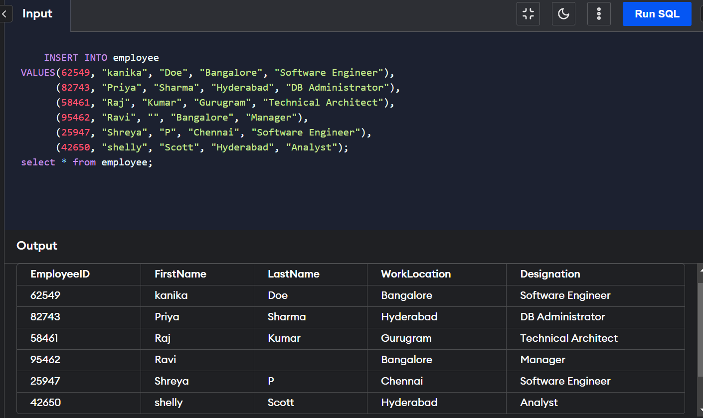

INSERT is a DML (Data Manipulation Language) command. The SQL INSERT INTO statement is a command that is used to insert data into tables. Using the insert into table SQL, we can insert new single or multiple records in a table of
relational databases. We can also copy the data from one table to another table using the INSERT INTO SELECT statement. For using the INSERT INTO SELECT statement, the data
types of the source and the destination tables have to be the same.
The SQL INSERT INTO statement is a SQL query or command used to insert data into tables.
Using the insert into table SQL, we can insert new single or multiple records in a table of relational
databases (databases like ORACLE, MySQL, MS-Access, IBM DB2, etc.).
~ A row of a database table is also known as a record or a tuple.
~ A column of a database table is also known as an attribute.
For inserting the data into the table, we have two ways:
1. The first one is by using the insert into table SQL command.
2. We can also insert new records in the table using the SQL insert into the select
statement.
Inserting data without using SELECT clause
a. INSERT INTO by specifying the column names
We can insert new record(s) into the table of the database by mentioning the
specific column names. By specifying the column names, we get flexibility in the insertion of values, as we can change the order of columns and values from the actual order of
columns present in the table of the database.
SYNTAX:
INSERT INTO table_name (column_1, column_2, ..., column_n)
VALUES (value_1, value_2, ..., value_n);
b. INSERT INTO without specifying the column names
We can insert new record(s) or values into the table of the database directly (without mentioning the column names). The syntax getter smaller when we do not specify the column names (the previous way). But, one of the drawbacks associated with the current way is that we do not get the flexibility, we cannot change the order of values from the actual order of columns present in the table of the database.
SYNTAX:
INSERT INTO table_name
VALUES (value_1, value_2, ..., value_n);
We can copy the data from one table to another table using the INSERT INTO SELECT statement.
For using the INSERT INTO SELECT statement, the data types of the source and the destination tables have to be the same.
The original data of the source table and the existing records of the destination tables are not affected.
As the other INSERT INTO statement, we have two ways of copying the data into the other table.
1. Without specifying the names of the columns of the table: We can copy all the columns of one table to the other table simply without mentioning the names of the columns.
SYNTAX:
INSERT INTO destination_table
SELECT * FROM source_table
WHERE condition;
2. By specifying the names of the columns of the table: We can copy the specific columns of one table to the other table by mentioning the names of the required columns.
SYNTAX:
INSERT INTO destination_table (column_1, column_2, ..., column_n)
SELECT (column_1, column_2, ..., column_n) FROM source_table
WHERE condition;
WHERE clause is optional. We can use the WHERE clause if we want only some specific conditional records to be copied from the source table to the destination table or output.
